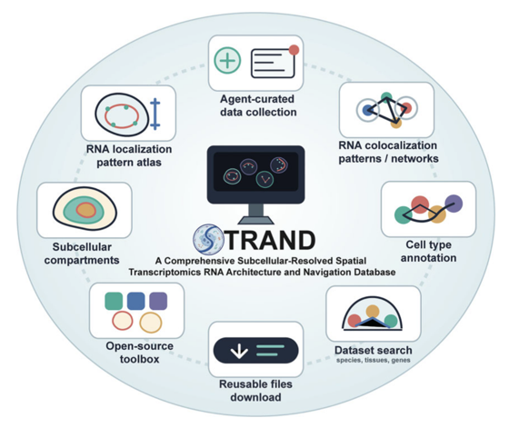

STRAND: a comprehensive subcellular-resolved spatial transcriptome RNA architecture and navigation database
NARNAR Breakthrough ArticleNucleic Acids Research, 2026
A subcellular-resolved spatial transcriptome database providing RNA architecture and navigation across cellular and tissue context.